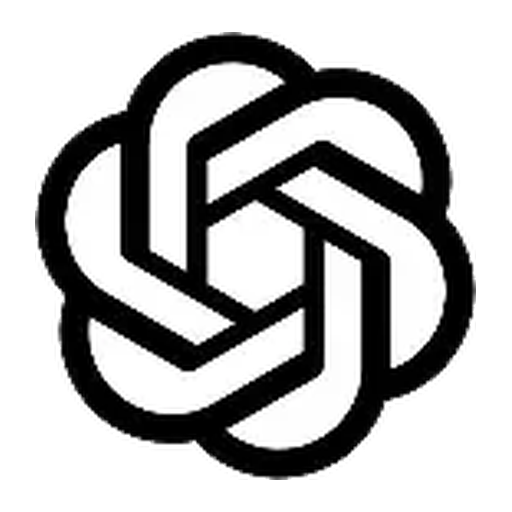

CONVERSA E EXPLICAÇÃO
ChatGPT
Ajuda a explicar conteúdos em diferentes níveis, criar perguntas de revisão, organizar ideias e dar feedback sobre um rascunho.
Bom uso: peça explicações e escreva a resposta final com suas próprias palavras.